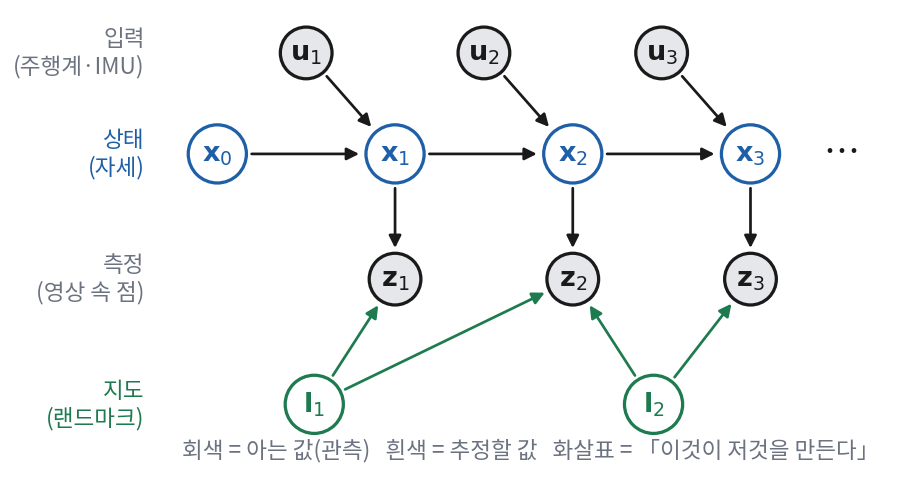
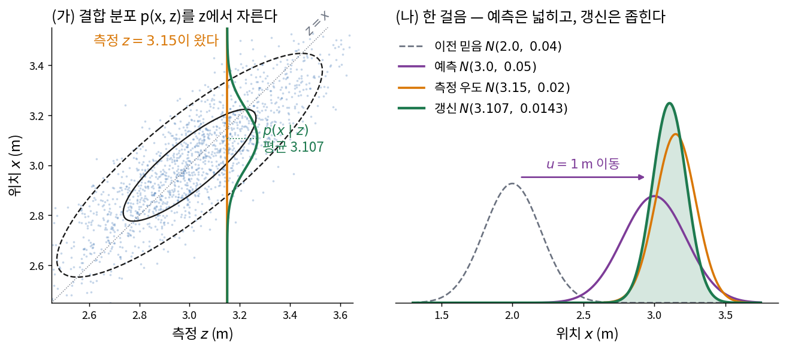
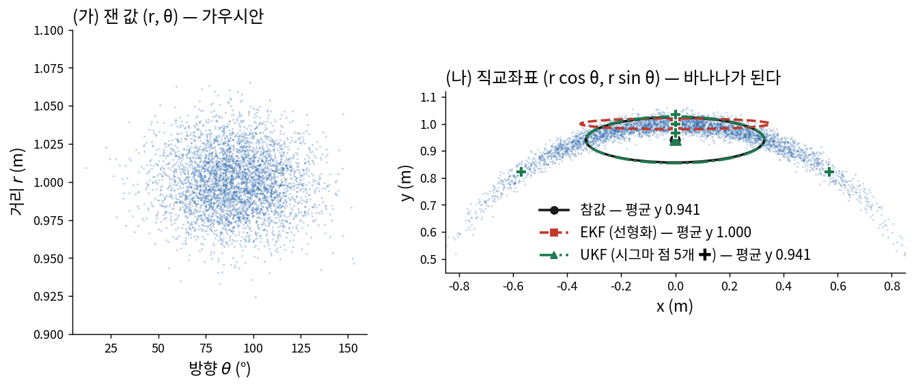
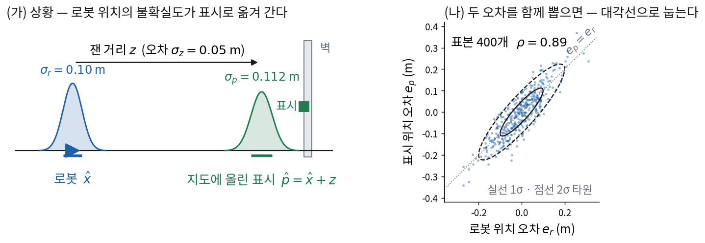
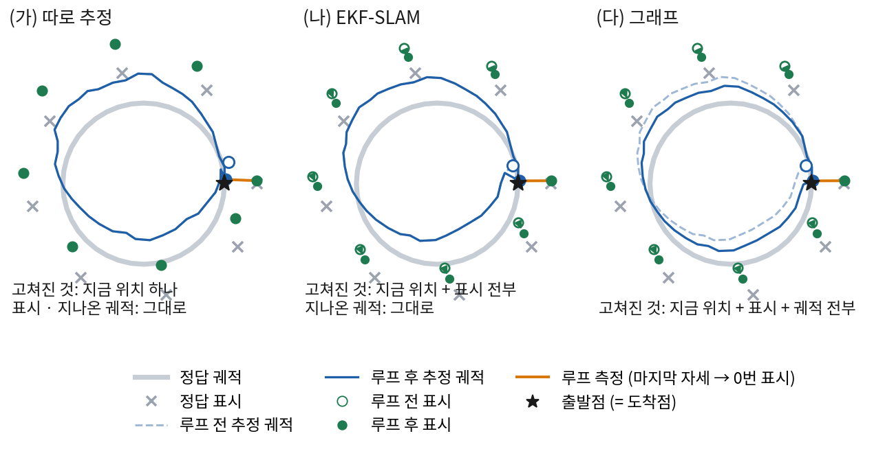
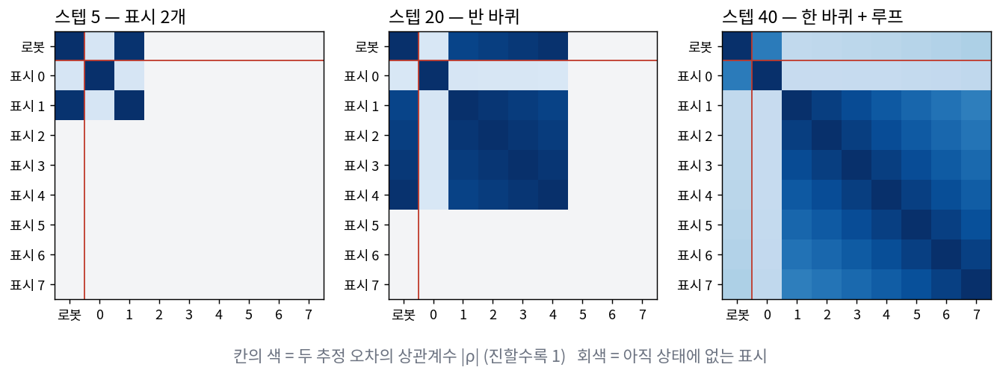
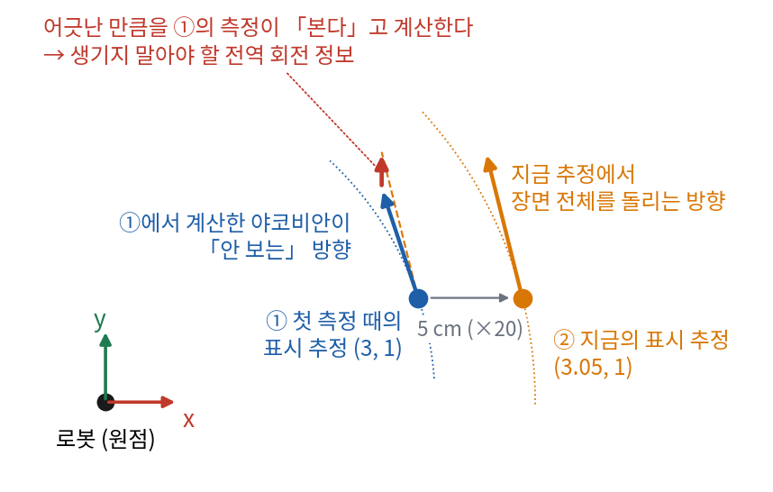

모형이 비선형이면 무엇을 포기하고(EKF), 그 대가를 줄이려고 무엇을 바꿔 왔나(IEKF · ESKF · UKF · 정보 필터 · 파티클 필터)?
지도를 상태에 넣으면(EKF-SLAM) 무엇이 좋아지고 무엇이 무너지나?
6회에서 SLAM 40년을 이야기로 훑었다. 시스템 이름이 수십 개 나왔지만, 그 밑에 깔린 수학적 틀은 사실 두 개뿐이었다.
하나는 지금 상태만 들고 다니며 측정이 올 때마다 고치는 틀(필터)이고,
다른 하나는 지나온 상태를 모두 들고 한꺼번에 다시 푸는 틀(최적화)이다.
오늘은 첫째를, 8회에는 둘째를 처음부터 끝까지 유도한다.
3부에서 VINS-Mono를 뜯어볼 때 나오는 식은 전부 이 두 회차의 식에 무엇을 갈아 끼운 것이다.
그래서 오늘은 코드를 한 줄도 쓰지 않고, 식이 왜 그렇게 생겼는지에만 시간을 쓴다.
대신 식이 나올 때마다 숫자를 대입한 줄과, 그 식이 맞는지 손으로 확인하는 법을 붙여 둔다.
Probabilistic Robotics는 Sebastian Thrun · Wolfram Burgard · Dieter Fox가 2005년에 낸 로봇 확률 추정 교과서로, 오늘과 8회 내용의 원전이다.
그 책은 \(R\)과 \(Q\)를 칼만 필터 교재와 정반대로 쓴다. 두 책을 같이 보다가 가장 먼저 헷갈리는 자리라서 미리 적어 둔다.
① SLAM을 확률로 세운다
로봇이 무엇을 「안다」는 것은 무슨 뜻일까? 1회에서 IMU만으로 적분한 궤적은 10초 만에 12 m를 벗어났다.
그 궤적의 한 점을 두고 「로봇은 여기 있다」라고 말하는 것은 정직하지 않다. 정직한 말은
「로봇은 이 근처 어딘가에 있고, 이쪽일 가능성이 가장 크다」에 가깝다.
그 「어딘가」와 「가능성」을 한꺼번에 담는 그릇이 확률분포다.
SLAM에 등장하는 양은 네 종류다. 아는 것 둘과 모르는 것 둘이다.
양
아는가
EuRoC에서는
입력 \(\mathbf{u}_k\)
안다 (잡음 섞인 채로)
IMU의 가속도·각속도 (10회)
측정 \(\mathbf{z}_k\)
안다 (잡음 섞인 채로)
영상에서 찾은 특징점의 픽셀 좌표 (4·5회)
상태 \(\mathbf{x}_k\)
모른다
몸체의 자세 \(T_{WB}\), 속도, 바이어스
랜드마크 \(\mathbf{l}_j\)
모른다
그 특징점이 가리키는 3차원 점
아는 것과 모르는 것을 잇는 식이 두 개 있다. 하나는 상태가 어떻게 변하는가, 다른 하나는 상태가 측정을 어떻게 만드는가다.
잡음 \(\mathbf{w}\)와 \(\mathbf{v}\)가 있기 때문에 이 두 식은 확률분포로 다시 쓸 수 있다.
「\(\mathbf{x}_{k-1}\)과 \(\mathbf{u}_k\)를 알면 \(\mathbf{x}_k\)는 \(f(\mathbf{x}_{k-1},\mathbf{u}_k)\) 둘레에 \(Q_k\)만큼 퍼져 있다」는 뜻이다.
평균 \(\boldsymbol\mu\), 공분산 \(\Sigma\)인 가우시안 분포를 \(\mathbf{a}\)에서 잰 밀도. 식은 ④절에서 쓴다. 세미콜론 앞이 변수, 뒤가 모수다.
우도 (likelihood)
\(p(\mathbf{z}\mid\mathbf{x})\)를 \(\mathbf{z}\)는 이미 잰 값으로 고정하고 \(\mathbf{x}\)의 함수로 볼 때 부르는 이름. 「상태가 이랬다면 지금 측정이 나올 법했나」를 잰다. \(\mathbf{x}\)에 대해 적분해도 1이 되지 않는다 — 확률분포가 아니라 함수다.
그래픽 모델 (graphical model)
확률변수를 동그라미로, 「무엇이 무엇을 만드나」를 화살표로 그린 그림. 아래 그림처럼 그리면 어느 변수가 어느 변수에 직접 의존하는지가 한눈에 보인다.

SLAM의 그래픽 모델. 회색은 아는 값(입력과 측정), 흰색은 추정할 값(상태와 랜드마크)이다.
\(\mathbf{x}_k\)로 들어오는 화살표는 \(\mathbf{x}_{k-1}\)과 \(\mathbf{u}_k\) 둘뿐이고, \(\mathbf{z}_k\)로 들어오는 화살표는 그때의 상태와 그때 본 랜드마크뿐이다.
②절의 「마르코프 가정」 두 개가 이 그림의 화살표 모양 그 자체다.
그럼 「SLAM을 푼다」는 것은 무엇을 구하는 것인가? 아는 것을 모두 조건으로 놓고, 모르는 것의 분포를 구하는 것이다.
무엇까지를 「모르는 것」에 넣느냐에 따라 두 판이 있다.
$$
\begin{aligned}
&p(\mathbf{x}_k,\ \mathbf{l}_{1:N} \mid \mathbf{z}_{1:k},\ \mathbf{u}_{1:k})
&&\text{Online SLAM — 지금 상태와 지도} \\
&p(\mathbf{x}_{0:k},\ \mathbf{l}_{1:N} \mid \mathbf{z}_{1:k},\ \mathbf{u}_{1:k})
&&\text{Full SLAM — 지나온 궤적 전체와 지도}
\end{aligned}
$$
\(\mathbf{z}_{1:k}\)는 \(\mathbf{z}_1, \dots, \mathbf{z}_k\)를 모두 모은 것을 줄여 쓴 것이다.
오늘의 필터는 Online SLAM을, 8회의 최적화는 Full SLAM을 푼다.
둘의 차이는 \(\mathbf{x}_{0:k-1}\)을 분포에 남겨 두느냐 지워 버리느냐 하나다. ⑨절에서 이 「지우기」가 정확히 무슨 연산인지 본다.
이 절부터 ⑦절까지는 식을 간단히 하려고 랜드마크를 상태 안에 넣었다고 보고 \(\mathbf{x}_k\) 하나만 쓴다.
로봇 위치추정(localization)이면 지도를 이미 알고 있는 경우이고, SLAM이면 \(\mathbf{x}_k\) 안에 랜드마크가 들어 있는 경우다(⑧절).
② 확률의 네 규칙
필터의 식은 놀랍게도 아래 네 규칙만으로 나온다. 확률을 배운 적이 있어도, ③절의 유도에서 어느 줄이 어느 규칙을 쓰는지
짚을 수 있도록 이름을 붙여 한 번 정리해 둔다.
규칙 1 — 곱셈법칙. 두 사건이 함께 일어날 확률은 「하나가 일어날 확률 × 그것이 일어났을 때 다른 하나가 일어날 확률」이다.
분모 \(p(b)\)는 \(a\)와 상관없는 상수다. 그래서 흔히 정규화 상수 \(\eta\)로 묶어 두고,
「우도와 사전을 곱한 다음 전체 합이 1이 되게 나눈다」고 읽는다. 둘째 줄 분모의 적분이 바로 규칙 2다.
규칙 4 — 조건부 독립. \(c\)를 알면 \(b\)가 \(a\)에 대해 더 알려 주는 것이 없을 때, \(b\)를 조건에서 뺄 수 있다.
$$
p(a \mid b,\, c) = p(a \mid c)
\qquad \Longleftrightarrow \qquad
p(a,\, b \mid c) = p(a \mid c)\, p(b \mid c)
$$
SLAM에서 쓰는 조건부 독립은 두 개이고, 둘 다 위 그림의 화살표 모양에서 읽힌다. 이 둘을 마르코프 가정이라고 부른다.
$$
\begin{aligned}
p(\mathbf{x}_k \mid \mathbf{x}_{0:k-1},\ \mathbf{z}_{1:k-1},\ \mathbf{u}_{1:k}) &= p(\mathbf{x}_k \mid \mathbf{x}_{k-1},\ \mathbf{u}_k)
&&\text{(M1) 지금 상태는 바로 앞 상태와 지금 입력만 안다} \\
p(\mathbf{z}_k \mid \mathbf{x}_{0:k},\ \mathbf{z}_{1:k-1},\ \mathbf{u}_{1:k}) &= p(\mathbf{z}_k \mid \mathbf{x}_k)
&&\text{(M2) 지금 측정은 지금 상태만 본다}
\end{aligned}
$$
🆕 Bayes · Markov — 사람 이름이다
Thomas Bayes (1701?~1761)
영국의 장로교 목사이자 수학자. 규칙 3에 해당하는 생각을 적은 글이 그가 죽은 뒤 1763년에 친구 Richard Price를 통해 발표됐다. 지금 쓰는 일반적인 꼴은 프랑스의 Laplace가 정리했다.
Andrey Markov (1856~1922)
러시아의 수학자. 「다음 상태가 지금 상태에만 달려 있는」 확률 과정을 연구했고, 그런 과정을 그의 이름을 따 마르코프 과정(Markov process)이라고 부른다.
마르코프 가정은 「참」이 아니라 「상태를 잘 고르면 참이 되는」 가정이다.
예를 들어 상태에 속도를 넣지 않으면 지금 위치를 알려면 지난 두 위치가 필요해서 M1이 깨진다.
IMU 바이어스를 상태에 넣지 않으면 바이어스가 측정마다 공통으로 끼어 M2가 깨진다(10회).
그래서 상태를 정한다는 것은 M1·M2가 성립하도록 필요한 것을 다 넣는다는 뜻이다.
1회에서 「상태 정의는 사람이 한다」고 했던 이유가 이 두 줄에 있다.
③ 베이즈 필터의 유도
측정이 하나씩 들어올 때마다 지금 상태의 분포를 처음부터 다시 계산하지 않고
바로 앞의 결과만 고쳐서 얻을 수는 없을까? 그것을 가능하게 하는 것이 베이즈 필터다.
먼저 두 가지 「믿음」을 정의한다.
마지막 갱신 뒤 6번 칸은 0.222, 처음 세 문 칸 중 나머지 둘(3 · 14)은 0.085다.
단 두 번의 측정으로 「셋 중 하나」가 「여기일 가능성이 다른 곳의 2.6배」로 바뀌었다.
격자 필터는 정확하지만 차원이 늘면 쓸 수 없다.
3차원 위치와 3차원 회전을 칸 100개씩으로 나누면 칸이 \(100^6 = 10^{12}\)개다.
랜드마크까지 상태에 넣으면 말할 것도 없다. 그래서 실제 SLAM은 둘 중 하나를 고른다 —
분포의 모양을 가우시안으로 못박고 평균·공분산만 들고 다니거나(⑤~⑦절),
분포를 표본 몇 백~몇 천 개로 대신하거나(⑦절 파티클 필터).
④ 가우시안의 다섯 성질
왜 하필 가우시안일까? 측정 잡음이 실제로 가우시안에 가깝다는 이유도 있지만, 더 큰 이유는
베이즈 필터의 두 연산(적분과 곱셈)을 해도 다시 가우시안이 된다는 성질이다.
그래서 평균과 공분산 두 개만 들고 다니면 분포 전체를 들고 다니는 것과 같다. 이 절은 그 성질을 하나씩 유도한다.
지수 안의 \((\mathbf{x}-\boldsymbol\mu)^\top \Sigma^{-1} (\mathbf{x}-\boldsymbol\mu)\)를 마할라노비스 거리의 제곱이라고 하고,
이 강의에서는 \(\lVert \mathbf{x}-\boldsymbol\mu \rVert^2_{\Sigma}\)로 줄여 쓴다. 8회에서 최소제곱의 「가중치 붙은 제곱」이 바로 이것이다.
이 값이 일정한 점들이 타원(3차원이면 타원체)을 이루고, 그 타원이 그림에서 늘 그리는 「1σ 타원」이다.
🆕 Gauss · Mahalanobis
Carl Friedrich Gauss (1777~1855)
독일의 수학자. 1809년 천체 궤도 계산에 관한 책에서 측정 오차가 이 분포를 따른다고 놓고 최소제곱법을 정당화했다. 그래서 가우시안과 최소제곱은 처음부터 한 몸이었다 — 8회의 출발점이 이것이다.
Prasanta Chandra Mahalanobis (1893~1972)
인도의 통계학자. 1936년에 공분산으로 나눠 잰 거리를 제안했다. 방향마다 퍼진 정도가 다르면 「같은 1 m」도 어떤 방향에서는 가깝고 어떤 방향에서는 멀다는 생각이다.
성질 1 — 선형변환해도 가우시안이다
\(\mathbf{x}\sim\mathcal{N}(\boldsymbol\mu, \Sigma)\)이고 \(\mathbf{y} = A\mathbf{x} + \mathbf{b}\)이면, 평균과 공분산은 기댓값의 선형성으로 바로 나온다.
모양이 가우시안으로 남는다는 것은 밀도식에 \(\mathbf{x} = A^{-1}(\mathbf{y}-\mathbf{b})\)를 넣으면 지수 안이 여전히 \(\mathbf{y}\)의 이차식이라는 데서 보인다
(\(A\)가 정사각이 아니어도 성립한다 — 특성함수로 보이는 것이 일반적이다).
둘째 줄을 펴 보면 첫 줄로 돌아온다(첫 항을 펴면 \(\boldsymbol\delta_b^\top\Lambda_{ba}\Lambda_{aa}^{-1}\Lambda_{ab}\boldsymbol\delta_b\)가 남는데, 둘째 항이 그것을 뺀다).
\(\mathbf{b}\)를 고정하면 둘째 항은 상수이므로, 남은 첫 항이 \(\mathbf{a}\)의 가우시안을 정한다.
오른쪽 세 행렬을 곱해 보면 왼쪽이 나온다(왼쪽 위 블록이 \(\Sigma_{aa} - \Sigma_{ab}\Sigma_{bb}^{-1}\Sigma_{ba} + \Sigma_{ab}\Sigma_{bb}^{-1}\Sigma_{ba} = \Sigma_{aa}\)).
가운데 블록 \(\Sigma_{aa}-\Sigma_{ab}\Sigma_{bb}^{-1}\Sigma_{ba}\)를 \(\Sigma_{bb}\)에 대한 Schur 보수라고 부른다.
양변의 역을 취하면 삼각 행렬의 역은 부호만 바뀌므로 이렇게 된다.
위의 \(\boldsymbol\mu_{a|b}\)에 넣으면 처음 적은 결과가 나온다. 유도 끝이다.
🆕 Schur 보수 (Schur complement)
Issai Schur (1875~1941)
독일(현 벨라루스 출신)의 수학자. 블록 행렬의 행렬식을 다루면서 이 꼴을 썼고, 1968년 Emilie Haynsworth가 그의 이름을 붙였다.
\(M = \begin{bmatrix}A & B\\ C & D\end{bmatrix}\)에서 \(D\)에 대한 Schur 보수 \(A - BD^{-1}C\)
「\(D\) 쪽 변수를 소거하고 남은 \(A\) 쪽 블록」이다. 오늘은 공분산의 Schur 보수 = 조건부 공분산으로 처음 나왔고,
8회에서는 정보행렬의 Schur 보수 = 주변화로, 번들조정에서는 점을 소거하는 계산으로 다시 나온다. 이 강의에서 가장 자주 만나는 식 가운데 하나다.
그러면 가우시안의 곱은 그냥 정보의 덧셈이다: \(\Lambda = \Lambda_1 + \Lambda_2\), \(\boldsymbol\eta = \boldsymbol\eta_1 + \boldsymbol\eta_2\).
연산
공분산 형식 \((\boldsymbol\mu, \Sigma)\)
정보 형식 \((\boldsymbol\eta, \Lambda)\)
주변화 (변수 지우기)
쉽다 — 블록을 뗀다
어렵다 — Schur 보수 \(\Lambda_{aa}-\Lambda_{ab}\Lambda_{bb}^{-1}\Lambda_{ba}\)
조건부 (값을 알게 됨)
어렵다 — Schur 보수 \(\Sigma_{aa}-\Sigma_{ab}\Sigma_{bb}^{-1}\Sigma_{ba}\)
쉽다 — 블록 \(\Lambda_{aa}\)를 뗀다
곱 (측정 합치기)
어렵다
쉽다 — 더한다
이 표가 7회와 8회를 잇는 다리다.
필터의 예측은 「지난 상태를 지운다」(주변화)라서 공분산 형식에 유리하고, 갱신은 「측정을 곱한다」라서 정보 형식에 유리하다.
칼만 필터는 공분산 형식을 택하고 갱신을 비싸게 치른다. 8회의 최적화는 정보 형식을 택하고 지우기를 아예 안 한다 — 그래서 가볍다.
정보 형식의 주변화가 어렵다는 것(Schur 보수)은 8회 ⑩절에서 「fill-in」이라는 모습으로 다시 나온다.
⑤ 칼만 필터(KF)
이제 베이즈 필터의 두 줄에 가우시안을 넣어 보자. 필요한 가정은 세 개다.
운동 모델이 선형: \(\mathbf{x}_k = F_k\mathbf{x}_{k-1} + B_k\mathbf{u}_k + \mathbf{w}_k\)
측정 모델이 선형: \(\mathbf{z}_k = H_k\mathbf{x}_k + \mathbf{v}_k\)
잡음 \(\mathbf{w}_k\sim\mathcal{N}(\mathbf{0},Q_k)\), \(\mathbf{v}_k\sim\mathcal{N}(\mathbf{0},W_k)\)가 서로 독립이고, 처음 믿음 \(\mathrm{bel}(\mathbf{x}_0)\)도 가우시안
\(B_k\mathbf{u}_k\)는 입력이 상태를 얼마나 바꾸는지를 나타내는 항이다(예: 「1 m 가라」면 위치에 1을 더한다).
이 가정 아래에서 믿음은 매 스텝 가우시안으로 남고, 그 평균과 공분산이 어떻게 바뀌는지가 칼만 필터다.
예측 — 성질 1과 2
\(\mathrm{bel}(\mathbf{x}_{k-1}) = \mathcal{N}(\hat{\mathbf{x}}_{k-1}, P_{k-1})\)라고 하자. 예측의 적분 \(\int p(\mathbf{x}_k\mid\mathbf{x}_{k-1},\mathbf{u}_k)\,\mathrm{bel}(\mathbf{x}_{k-1})\,d\mathbf{x}_{k-1}\)은
「\(\mathbf{x}_{k-1}\)을 뽑아 \(F_k\)를 곱하고 \(B_k\mathbf{u}_k\)를 더한 뒤, 독립인 잡음 \(\mathbf{w}_k\)를 더한 것」의 분포다. 성질 1·2를 차례로 쓰면 끝난다.
예측 믿음 아래에서 상태 \(\mathbf{x}_k\)와 앞으로 올 측정 \(\mathbf{z}_k = H_k\mathbf{x}_k + \mathbf{v}_k\)를 한 벡터로 쌓으면 결합 가우시안이다
(\([\mathbf{x};\mathbf{z}]\)가 \([\mathbf{x};\mathbf{v}]\)의 선형변환이기 때문이다 — 성질 1).
그 평균과 공분산을 블록마다 계산한다. 아래첨자 \(k\)는 잠시 뗀다.
측정 \(\mathbf{z}\)가 실제로 들어왔다. 갱신된 믿음은 이 결합 분포를 그 \(\mathbf{z}\)에서 자른 조건부 \(p(\mathbf{x}\mid\mathbf{z})\)다.
성질 4에 \(\mathbf{a}=\mathbf{x}\), \(\mathbf{b}=\mathbf{z}\)를 넣는다.
마지막 줄은 \(P^- - P^-H^\top S^{-1}HP^- = P^- - K H P^-\)에서 나온다. 같은 것을 \(P^- - KSK^\top\)로도 쓸 수 있다
(\(KSK^\top = P^-H^\top S^{-1} S S^{-1} H P^- = KHP^-\)). ⑧절의 계산량 이야기에서 이 꼴이 쓰인다.
🆕 Kalman — 사람 이름이다
Rudolf E. Kálmán (1930~2016)
헝가리 부다페스트에서 태어나 미국에서 활동한 수학자·공학자. 1960년 논문 A New Approach to Linear Filtering and Prediction Problems로 이 필터를 발표했다.
NASA Ames의 Stanley Schmidt가 이것을 비선형 궤도 문제에 맞게 고친 것(⑥절의 EKF)이 아폴로 우주선의 항법에 쓰였다.
갱신 유도 2 — MAP와 최소제곱
같은 갱신을 전혀 다른 길로 다시 얻어 보자. 이 둘째 길이 8회 전체의 씨앗이다.
베이즈 필터의 갱신 \(\mathrm{bel} = \eta\,p(\mathbf{z}\mid\mathbf{x})\,\overline{\mathrm{bel}}(\mathbf{x})\)에서
분포가 가장 높은 점(MAP, maximum a posteriori)을 찾는다고 하자. 곱보다 합이 다루기 쉬우니 \(-\log\)를 취한다.
정보 형식 그대로다. 예측의 정보 \((P^-)^{-1}\)에 측정의 정보 \(H^\top W^{-1}H\)를 더하면 갱신된 정보다 (성질 5).
\(J\)의 두 번 미분(헤시안)이 \(\Lambda\)이고, 가우시안 MAP 문제에서는 그 헤시안의 역이 바로 사후 공분산이다 —
8회에서 「정보행렬 = 가우스-뉴턴 헤시안」으로 다시 만나는 사실이다.
남은 것은 \(PH^\top W^{-1} = K\)인지다. 위에서 얻은 \(P = P^- - KHP^-\)를 넣는다.
$$
\begin{aligned}
PH^\top W^{-1}
&= P^-H^\top W^{-1} - KHP^-H^\top W^{-1}
= P^-H^\top W^{-1} - K\,(S - W)\,W^{-1}
&&HP^-H^\top = S - W \\
&= P^-H^\top W^{-1} - KSW^{-1} + K
= P^-H^\top W^{-1} - P^-H^\top W^{-1} + K = K
&&KS = P^-H^\top
\end{aligned}
$$
두 유도가 같은 답을 낸다는 것이 오늘 가장 중요한 사실이다.
유도 1은 「분포를 자른다」는 확률의 언어이고, 유도 2는 「벌점의 합을 최소로 한다」는 최적화의 언어다.
선형·가우시안이면 둘은 완전히 같다. 8회는 유도 2의 길을 지나온 상태 전부에 대해 걷는다.
비선형이면 두 길이 갈라지는데, 갈라지는 방식이 곧 ⑥·⑦절의 EKF와 IEKF의 차이다.
숫자로 한 걸음
상황을 먼저 세운다 (src/filter_numbers.py ②).
1차원 복도의 로봇. 지금 위치 추정은 \(\hat x = 2.0\) m, 분산 \(P = 0.04\) m² (표준편차 0.2 m).
「1 m 가라」고 했다: \(u = 1.0\) m, 운동 잡음 분산 \(Q = 0.01\) m² (0.1 m).
벽까지의 거리로 위치를 재는 센서가 \(z = 3.15\) m를 읽었다. 측정 잡음 분산 \(W = 0.02\) m² (0.141 m). \(H = 1\)이다.

(가) 유도 1의 그림 — 예측 아래에서 \((x, z)\)는 대각선으로 누운 결합 가우시안이고, 실제로 온 \(z\)에서 자른 단면이 갱신된 믿음이다.
(나) 유도 2의 그림 — 예측(보라)과 측정 우도(주황)를 곱하면 둘보다 좁은 초록이 된다. 두 그림의 초록이 같은 분포다.
$$
\begin{aligned}
\hat x^- &= 2.0 + 1.0 = 3.0,
&\quad P^- &= 0.04 + 0.01 = 0.05
&&\text{예측} \\
y &= 3.15 - 3.0 = 0.15,
&\quad S &= 0.05 + 0.02 = 0.07
&&\text{혁신과 그 분산} \\
K &= 0.05 / 0.07 = 0.7143
&&&&\text{예측보다 측정을 2.5배 믿는다} \\
\hat x &= 3.0 + 0.7143 \times 0.15 = 3.1071,
&\quad P &= (1 - 0.7143) \times 0.05 = 0.01429
&&\text{갱신 — 표준편차 0.120 m}
\end{aligned}
$$
두 길의 답이 소수 넷째 자리까지 같다(스크립트에서 차이는 0이다).
스칼라일 때 칼만 이득은 \(K = P^-/(P^-+W)\) — 「내 예측의 불확실도가 전체 불확실도에서 차지하는 비율」이다.
\(W\to0\)(완벽한 센서)이면 \(K\to1\)이라 측정을 그대로 받고, \(W\to\infty\)(쓸모없는 센서)이면 \(K\to0\)이라 예측을 지킨다.
갱신 분산 \(P = P^-W/(P^-+W)\)는 \(P^-\)와 \(W\)의 조화평균의 절반이라 둘 중 어느 것보다도 작다.
Joseph 형 · 혁신 · 일관성
\(P = (I-KH)P^-\)는 \(K\)가 정확히 최적일 때만 성립하는 줄임 꼴이다. 반올림 오차로 \(K\)가 조금이라도 어긋나면
\(P\)가 대칭성을 잃거나 음의 고윳값을 가질 수 있다. 오차 \(\mathbf{e} = \mathbf{x} - \hat{\mathbf{x}}\)를 직접 따라가면 어떤 \(K\)에서도 성립하는 꼴이 나온다.
$$
\begin{aligned}
\mathbf{e} &= \mathbf{x} - \hat{\mathbf{x}}^- - K(H\mathbf{x} + \mathbf{v} - H\hat{\mathbf{x}}^-)
= (I - KH)\,\mathbf{e}^- - K\mathbf{v} \\
P &= \mathrm{E}[\mathbf{e}\mathbf{e}^\top] = (I-KH)\,P^-\,(I-KH)^\top + KWK^\top
&&\textbf{Joseph 형}\text{ — 두 항이 모두 양의 준정부호}
\end{aligned}
$$
\(K = P^-H^\top S^{-1}\)를 넣고 펴면 \((I-KH)P^-\)로 줄어드는 것을 확인할 수 있다. 1960년대 Peter Joseph가 제안해 그의 이름이 붙었다.
필터가 「맞게」 돌고 있는지는 혁신으로 잰다. 모형이 맞다면 혁신 \(\mathbf{y}_k\)는 평균 0, 공분산 \(S_k\)인 가우시안이어야 한다.
그래서 아래 두 값은 자유도가 정해진 \(\chi^2\) 분포를 따른다.
NEES의 평균이 \(n\)보다 크게 나오면 필터가 실제보다 자기를 더 확신하고 있다(과신, overconfident)는 뜻이다.
이것이 ⑧절에서 말할 「일관성(consistency)」의 정의다 — 필터가 믿는 공분산이 실제 오차의 크기와 맞는가.
위 숫자 예에서는 \(n = m = 1\)이므로 NIS \(= 0.15^2 / 0.07 = 0.32\)다. 한 번 잰 값이라 판정할 수는 없고, 여러 스텝 평균이 1 근처여야 한다.
⑥ 확장 칼만 필터(EKF)
현실의 SLAM에서 선형인 식은 거의 없다. 로봇이 방향을 틀며 나아가는 운동에는 \(\cos\theta\), \(\sin\theta\)가 들어가고,
카메라 투영(4회)은 깊이로 나눈다. 그럼 칼만 필터는 쓸 수 없는 걸까?
EKF의 답은 단순하다 — 지금 추정값 근처에서만 선형이라고 치자.
펴 놓은 식은 선형이므로 칼만 필터를 그대로 쓸 수 있다. 다만 평균은 펴지 않은 원래 함수로 계산한다 — 그쪽이 더 정확하기 때문이다.
잡음이 덧셈 꼴로 들어가지 않는 경우(\(\mathbf{x}_k = f(\mathbf{x}_{k-1}, \mathbf{u}_k, \mathbf{w}_k)\))에는 잡음에 대한 야코비안 \(L_k = \partial f/\partial\mathbf{w}\)도 필요하다.
평면 위 로봇의 상태 \(\mathbf{x} = (p_x, p_y, \theta)\), 입력은 앞으로 가는 속력 \(v\)와 도는 각속도 \(\omega\), 시간 간격 \(\Delta t\)다.
앞쪽 방향으로 \(v\Delta t\)만큼 가고 \(\omega\Delta t\)만큼 돈다.
입력 잡음(속력과 각속도의 잡음)의 공분산을 \(Q_u\)라 하면 상태 공간의 운동 잡음은 \(L Q_u L^\top\)이다.
\(F\)의 오른쪽 위 두 칸이 방향의 불확실도가 위치의 불확실도로 번지는 통로다 —
방향을 1° 잘못 알고 10 m를 가면 옆으로 17 cm 벗어나는 바로 그 효과다.
예 2 — 거리-방위 측정
로봇이 랜드마크 \(\mathbf{l} = (l_x, l_y)\)까지의 거리 \(r\)와, 로봇 앞쪽에서 잰 방위 \(\phi\)를 잰다.
\(\Delta_x = l_x - p_x\), \(\Delta_y = l_y - p_y\), \(q = \Delta_x^2 + \Delta_y^2\)로 놓는다.
상태를 \((p_x, p_y, \theta, l_x, l_y)\)로 두고(⑧절의 EKF-SLAM 꼴) 다섯 변수로 미분한다.
방위 줄은 \(\partial\,\mathrm{atan2}(\Delta_y,\Delta_x)/\partial\Delta_x = -\Delta_y/q\), \(\partial/\partial\Delta_y = \Delta_x/q\)에서 나오고,
\(p\)로 미분할 때는 \(\Delta = l - p\)이라 부호가 한 번 더 뒤집힌다.
로봇이 원점 \((0, 0, 0)\)에, 랜드마크가 \((3, 1)\)에 있으면 (src/filter_numbers.py ③)
유한차분으로 계산한 야코비안과의 차이는 \(1.8\times10^{-10}\)이다. 두 가지를 눈여겨볼 만하다.
로봇 칸과 랜드마크 칸이 부호만 다르다 — 측정은 둘의 차 \(\mathbf{l}-\mathbf{p}\)에만 달려 있기 때문이다.
그리고 둘을 똑같이 옮기면(\(\delta p = \delta l\)) 측정이 안 바뀐다 — 이 「보이지 않는 방향」이 ⑧절 일관성 이야기의 열쇠다.
선형화가 잃는 것
EKF가 무엇을 포기했는지 그림으로 보자. 가장 단순한 비선형 — 극좌표를 직교좌표로 바꾸는 것 하나만 본다.
거리 \(r\sim\mathcal{N}(1, 0.02^2)\)는 잘 알고, 방향 \(\theta\sim\mathcal{N}(90°, 0.35^2)\)(약 20°)는 잘 모르는 상황이다.
\((x, y) = (r\cos\theta, r\sin\theta)\)의 분포는 어떻게 생겼을까?

같은 입력 분포를 세 방법으로 옮겼다. 참값은 표본 100만 개로 잰 것이다.
EKF(빨강)는 평균을 바나나의 바깥에 놓고 세로 폭을 거의 0으로 본다. UKF(초록, ⑦절)는 점 다섯 개만 보내고도 참값과 거의 겹친다.
평균 \(y\)
\(y\) 분산
\(x\) 분산
참값 (몬테카를로 100만 개)
0.9406
0.0070
0.1086
EKF (평균점에서 선형화)
1.0000
0.0004
0.1225
UKF (시그마 점 5개)
0.9406
0.0075
0.1082
EKF가 틀린 이유는 두 가지다. 첫째, 함수의 평균은 평균의 함수가 아니다: \(\mathrm{E}[f(\mathbf{x})] \ne f(\mathrm{E}[\mathbf{x}])\).
\(\mathrm{E}[r\sin\theta] = \mathrm{E}[r]\,e^{-\sigma_\theta^2/2} = 0.9406\)인데, EKF는 \(f(\boldsymbol\mu) = 1\)을 쓴다.
둘째, 1차 근사는 휘어짐을 모른다. 세로 방향 퍼짐의 대부분은 「방향이 흔들리면 원호를 따라 아래로 처진다」는 2차 효과인데,
평균점에서의 기울기 \(\partial y/\partial\theta = r\cos 90° = 0\)이라 EKF에게는 그 효과가 없다. 그래서 세로 분산을 약 17배 작게 본다.
EKF의 실패는 「틀린다」보다 「틀린 채 확신한다」 쪽이다.
분산을 작게 보면 다음 측정의 칼만 이득이 작아져 측정을 덜 듣는다. 그러면 오차가 고쳐지지 않은 채 쌓인다.
선형화 오차는 불확실도가 클수록, 함수가 휠수록 커진다. SLAM에서 둘 다 큰 자리가 처음 보는 랜드마크의 초기화와 큰 회전이다.
⑦절의 변형들은 전부 이 문제를 줄이는 서로 다른 방법이다.
⑦ KF의 변형들
EKF가 나온 뒤 수십 년 동안 수많은 변형이 나왔다. 이름은 많지만 묻는 질문은 셋뿐이다.
선형화를 어디서 하나(IEKF), 무엇을 상태로 두나(ESKF · 정보 필터), 선형화를 아예 안 할 수 있나(UKF · 파티클 필터).
IEKF — 갱신을 반복한다
EKF는 \(h\)를 예측값 \(\hat{\mathbf{x}}^-\)에서 편다. 그런데 갱신이 끝나면 더 나은 추정 \(\hat{\mathbf{x}}\)가 생긴다.
그 점에서 다시 펴고 다시 갱신하면 어떨까? 유도 2(MAP)의 비선형판으로 돌아가 보면 답이 분명해진다.
비선형 최소제곱이다. \(i\)번째 추정 \(\mathbf{x}^{(i)}\)에서 \(h(\mathbf{x}) \approx h(\mathbf{x}^{(i)}) + H_i(\mathbf{x}-\mathbf{x}^{(i)})\)로 펴면 다시 이차식이 되고,
그 최소점을 다음 추정으로 삼는다(이것이 8회에서 배울 가우스-뉴턴 한 걸음이다). 이차식의 기울기를 0으로 놓고 Woodbury로 정리하면 이렇게 된다.
\(\mathbf{x}^{(0)} = \hat{\mathbf{x}}^-\)로 시작하면 보정항이 0이라 첫 반복이 정확히 EKF다.
즉 EKF는 「가우스-뉴턴을 한 번만 하고 멈춘 IEKF」다. 이 관찰(Bell & Cathey, 1993)이 필터와 최적화가 같은 문제를 푼다는 첫 번째 증거다.
측정이 크게 비선형일 때(가까운 랜드마크, 큰 혁신) 효과가 크고, 비용은 반복 횟수만큼 \(H\)와 \(S^{-1}\)을 다시 계산하는 것이다.
ESKF — 오차를 상태로 둔다
3회에서 회전은 벡터 공간이 아니라 manifold \(\mathbf{SO}(3)\) 위에 산다는 것을 봤다. 그럼 회전에 칼만 필터를 쓰려면 무엇이 문제일까?
쿼터니언 네 숫자를 상태로 두면 \(\lVert q\rVert = 1\) 제약 때문에 공분산이 한 방향으로 0이어야 한다. 4×4 공분산이 특이 행렬이 된다.
갱신 \(\hat{\mathbf{x}} + K\mathbf{y}\)의 「더하기」가 회전에서는 뜻이 없다. 더한 쿼터니언은 단위가 아니다.
오일러각 세 숫자는 짐벌락(3회)에서 야코비안이 무너진다.
오차상태 칼만 필터(ESKF, error-state Kalman filter)는 상태를 둘로 나눠 이 문제를 피한다.
$$
\mathbf{x}_{\text{참}} = \bar{\mathbf{x}} \boxplus \delta\mathbf{x},
\qquad
\bar{\mathbf{x}}:\ \text{공칭 상태 (manifold 위 · 잡음 없이 적분)},
\qquad
\delta\mathbf{x} \sim \mathcal{N}(\mathbf{0}, P):\ \text{오차 상태 (tangent space · 작다)}
$$
회전 부분의 \(\boxplus\)는 이 강의의 규약대로 right perturbation이다: \(R_{\text{참}} = \bar R\,\mathrm{Exp}(\delta\boldsymbol\theta)\) (3회).
칼만 필터가 다루는 것은 \(\delta\mathbf{x}\) 하나다. 이것은 원점 근처의 작은 벡터라 제약도 특이점도 없고, 선형화가 잘 맞는다.
한 스텝은 다섯 단계다.
리셋의 \(G\)는 「기준점(공칭)이 옮겨 갔으니 오차를 새 기준점에서 다시 잰다」는 좌표 바꾸기다.
회전 블록에서 \(\bar R\,\mathrm{Exp}(\delta\hat{\boldsymbol\theta})\,\mathrm{Exp}(\delta\boldsymbol\theta^+) = \bar R\,\mathrm{Exp}(\delta\boldsymbol\theta)\)를 1차로 풀면
\(G_\theta \approx I - \tfrac12[\delta\hat{\boldsymbol\theta}]_\times\)이고, \(\delta\hat{\boldsymbol\theta}\)가 작아 흔히 \(I\)로 둔다.
둘째 줄에 \(R = \bar R\,\mathrm{Exp}(\delta\boldsymbol\theta)\)를 양쪽에 넣고 첫 줄로 나누면 오차가 어떻게 번지는지 나온다.
3회의 두 성질 — \(\mathrm{Exp}(\mathbf{a}-\mathbf{b}) \approx \mathrm{Exp}(\mathbf{a})\,\mathrm{Exp}(-J_r(\mathbf{a})\mathbf{b})\)와
Adjoint 성질 \(\Delta R^\top\mathrm{Exp}(\boldsymbol\phi)\Delta R = \mathrm{Exp}(\Delta R^\top\boldsymbol\phi)\) — 을 쓴다.
\(\Delta R = \mathrm{Exp}(\tilde{\boldsymbol\omega}\Delta t)\)로 줄여 쓴다.
측정은 정지해 있을 때의 가속도계로 하자. 10회에서 자세히 보겠지만 정지한 가속도계는 몸체 좌표로 본 「위쪽 중력 반작용」을 읽는다:
\(\mathbf{z} = R^\top\bar{\mathbf{g}} + \mathbf{v}\), \(\bar{\mathbf{g}} = (0, 0, 9.81)\). \(R = \bar R\,\mathrm{Exp}(\delta\boldsymbol\theta)\)를 넣고 1차로 편다.
\(H_\delta\)는 반대칭 행렬이라 \(\bar R^\top\bar{\mathbf{g}}\) 방향으로 도는 오차에는 0을 곱한다(\([\mathbf{a}]_\times\mathbf{a} = \mathbf{0}\)).
중력 방향을 축으로 도는 회전 — 즉 yaw — 는 가속도계로 볼 수 없다는 뜻이다. 롤·피치는 보이고 yaw는 안 보인다.
시각-관성 SLAM에서 관측할 수 없는 방향이 「위치 3 + yaw 1 = 4자유도」인 이유(13회의 4자유도 자세그래프)의 절반이 이 한 줄에 있다.
🆕 ESKF의 원전
Joan Solà, Quaternion kinematics for the error-state Kalman filter (2017)
스페인 IRI(바르셀로나 로봇연구소)의 연구자가 쓴 긴 해설 문서. 쿼터니언과 오차 상태 필터를 처음부터 끝까지 정리해, 시각-관성 필터를 만드는 사람들이 사실상 표준으로 참조한다.
다만 이 문서는 local(=right) perturbation과 global(=left)을 둘 다 다루므로, 읽을 때 어느 쪽 식인지 확인해야 한다.
UKF — 야코비안 대신 점을 보낸다
⑥절의 그림에서 문제는 「분포 전체를 함수에 통과시키는 대신, 평균점의 기울기만 봤다」는 것이었다.
그럼 분포를 대표하는 점 몇 개를 골라 함수에 그대로 통과시키면 어떨까? 그것이 unscented transform이고, 그것을 쓰는 필터가 UKF다.
\(n\)차원 \(\mathcal{N}(\boldsymbol\mu, P)\)에서 시그마 점 \(2n+1\)개와 가중치를 이렇게 고른다.
선형 함수에 통과시키면 이 식은 정확히 \(A\boldsymbol\mu+\mathbf{b}\), \(APA^\top\)를 준다 — 칼만 필터와 같다.
비선형이면 테일러 전개의 2차 항까지 평균이 맞는다. ⑥절 그림은 \(n=2\), \(\alpha=1\), \(\beta=0\), \(\kappa = 3-n = 1\)(Julier와 Uhlmann의 원래 선택)로,
점 다섯 개만으로 평균 \(y\) 0.9406(참값 0.9406), \(y\) 분산 0.0075(참값 0.0070)를 냈다.
갱신도 같은 생각이다. 예측 시그마 점 \(\boldsymbol\chi_i^-\)를 측정 함수에 통과시켜 \(\boldsymbol\zeta_i = h(\boldsymbol\chi_i^-)\)를 얻고,
\(K = P_{xz}S^{-1}\)는 성질 4의 \(\Sigma_{ab}\Sigma_{bb}^{-1}\) 그대로다. KF에서는 \(P_{xz} = P^-H^\top\)였던 것을 표본으로 잰 것뿐이다.
UKF는 야코비안이 필요 없다는 큰 장점이 있지만, 함수를 \(2n+1\)번 불러야 한다. 상태가 수천 차원인 SLAM에서는 그 비용이 커서 잘 쓰이지 않고,
상태가 작은 위치추정·자세추정에서 주로 쓰인다.
정보 필터 — \(\Lambda\)와 \(\boldsymbol\eta\)를 들고 다닌다
④절의 표를 떠올리면 자연스러운 질문이 생긴다. 칼만 필터를 정보 형식으로 돌리면 어떻게 될까?
갱신은 유도 2에서 이미 얻었다 — 더하기 두 개다.
\(H_k\)가 상태의 몇 칸만 건드리면 \(H_k^\top W_k^{-1}H_k\)도 그 칸만 0이 아니다. 측정 하나가 정보행렬에 남기는 흔적은 그 측정에 든 변수 쌍뿐이다.
비선형(EIF, extended information filter)이면 \(\boldsymbol\eta\) 쪽에 선형화점 \(\bar{\mathbf{x}}\)의 보정이 붙는다: \(H^\top W^{-1}\big(\mathbf{z} - h(\bar{\mathbf{x}}) + H\bar{\mathbf{x}}\big)\).
예측은 거꾸로 어렵다. \(\Lambda^- = (P^-)^{-1} = (F\Lambda_{k-1}^{-1}F^\top + Q)^{-1}\) — 역행렬이 두 번 든다.
이 예측을 다른 눈으로 보면 8회로 가는 길이 보인다. 지난 상태 \(\mathbf{x}_{k-1}\)과 새 상태 \(\mathbf{x}_k\)를 함께 들고 있다고 생각하자.
운동 모델 \(\mathbf{x}_k = F\mathbf{x}_{k-1} + B\mathbf{u} + \mathbf{w}\)의 \(-\log\)는 \(\tfrac12\lVert \mathbf{x}_k - F\mathbf{x}_{k-1} - B\mathbf{u}\rVert^2_Q\)이고, 이것을 \((\mathbf{x}_{k-1}, \mathbf{x}_k)\)로 펴면 정보행렬 조각이 나온다.
칼만 필터의 \(P^- = FPF^\top + Q\)와 정확히 같다. 정리하면 예측 = 「운동 조각을 붙이고, 지난 상태를 Schur 보수로 지운다」다.
지우기 전 결합 정보행렬은 띠 모양으로 희소했는데, 지우고 나면 그 희소성이 사라질 수 있다. 이것이 ⑨절과 8회의 출발점이다.
정보 필터는 SLAM에서 한때 큰 기대를 받았다. 랜드마크를 많이 넣어도 정보행렬이 거의 희소하게 남는다는 관찰 때문이다
(Thrun 외 2004, SEIF — sparse extended information filter). 다만 지난 자세를 계속 지우는 한 정보행렬은 조금씩 차오르고,
SEIF는 작은 값을 억지로 0으로 만들어 희소성을 유지했다. 이 억지가 일관성을 해친다는 것이 알려지면서,
「지난 자세를 지우지 않으면 정보행렬은 정확히 희소하다」는 쪽(8회의 그래프 최적화)이 이겼다.
파티클 필터와 FastSLAM
가우시안을 버리면 어떻게 될까? ③절의 격자처럼 아무 모양이나 담을 수 있으면서 차원에 덜 민감한 방법이 있다 — 분포를 표본(파티클)으로 대신하는 것이다.
베이즈 필터의 두 줄을 표본으로 그대로 옮긴 것이 가장 기본적인 SIR(sampling importance resampling) 파티클 필터다.
$$
\begin{aligned}
&\text{예측:} &\mathbf{x}_k^{[i]} &\sim p(\mathbf{x}_k \mid \mathbf{x}_{k-1}^{[i]},\ \mathbf{u}_k)
&&\text{파티클마다 운동 모델에서 하나씩 뽑는다 — 적분을 표본으로} \\
&\text{갱신:} &w_k^{[i]} &= \eta\ p(\mathbf{z}_k \mid \mathbf{x}_k^{[i]})
&&\text{측정과 맞는 파티클에 무게를 준다 — 곱셈을 무게로} \\
&\text{재표집:} &&\text{무게에 비례해 } M\text{개를 다시 뽑고 무게를 } 1/M\text{로}
&&\text{무게가 한쪽에 몰리는 것(퇴화)을 막는다}
\end{aligned}
$$
무게가 「우도」인 이유는 중요도 표집(importance sampling)에서 나온다. 뽑고 싶은 분포(목표)가 \(\mathrm{bel} = \eta\,p(\mathbf{z}\mid\mathbf{x})\,\overline{\mathrm{bel}}\)인데
실제로 뽑은 분포(제안)가 \(\overline{\mathrm{bel}}\)이므로, 무게는 목표/제안 \(= \eta\,p(\mathbf{z}\mid\mathbf{x})\)다.
무게가 몇 개 파티클에 몰렸는지는 유효 표본 수 \(M_{\text{eff}} = 1/\sum_i (w^{[i]})^2\)로 잰다. 모든 무게가 같으면 \(M\), 하나에 몰리면 1이다.
파티클 필터의 약점은 차원이다. 분포를 고르게 덮으려면 차원이 하나 늘 때마다 파티클이 몇 배씩 필요하다.
SLAM 상태 전체(로봇 + 랜드마크 수천 개)에 쓰는 것은 불가능하다. 이것을 푼 것이 Rao-Blackwellization이다.
첫 등호는 규칙 1(곱셈법칙)이고, 랜드마크끼리의 곱으로 쪼개지는 것은 경로를 알면 랜드마크들이 서로 독립이기 때문이다(규칙 4).
랜드마크들이 상관을 갖는 이유는 「같은 로봇의 같은 위치 오차를 나눠 가져서」였으므로(⑧절), 경로를 조건으로 고정하면 그 공통 원인이 사라진다.
그래서 경로 가설마다 랜드마크를 2×2짜리 작은 EKF로 따로 추정한다. 이것이 FastSLAM(Montemerlo · Thrun 외, 2002)이다.
2차원 레이저 SLAM(격자 지도를 쓰는 GMapping 등)과 지도 안에서의 위치추정(Monte Carlo localization)에서 오래 쓰였고,
6자유도 시각 SLAM에서는 경로 공간이 너무 커서 거의 쓰이지 않는다.
🆕 Rao · Blackwell · Julier · Uhlmann
C. R. Rao (1920~2023) · David Blackwell (1919~2010)
인도 출신 통계학자와 미국 통계학자. 1940년대에 각자 「일부 변수를 조건부로 정확히 적분해 내면 추정량의 분산이 줄어든다」는 정리를 보였다. 파티클 필터에서는 「해석적으로 풀리는 부분(랜드마크)은 풀고, 안 풀리는 부분(경로)만 표본으로」라는 뜻으로 쓴다.
Simon Julier · Jeffrey Uhlmann
옥스퍼드에서 Hugh Durrant-Whyte 그룹에 있던 연구자들. 1997년에 unscented transform과 UKF를 발표했다. 「unscented」에는 깊은 뜻이 없고, 이름을 짓다가 붙인 농담에 가까운 말이라고 Uhlmann이 회고했다.
한 표로 비교
필터
분포를 무엇으로
비선형 처리
갱신 비용
SLAM에서 쓰이는 자리
KF
평균 · 공분산
— (선형만)
\(O(n^2)\) ~ \(O(n^3)\)
개념의 기준. 선형 부분 시스템
EKF
평균 · 공분산
지금 추정값에서 1차
같다
EKF-SLAM, MonoSLAM (6회)
IEKF
평균 · 공분산
갱신 안에서 가우스-뉴턴 반복
× 반복 횟수
측정이 크게 비선형일 때 · 라이다-관성 오도메트리
ESKF
공칭(manifold) + 오차 가우시안
오차 상태에서 1차 — 작아서 잘 맞는다
EKF와 같다
IMU 필터의 표준 · MSCKF · OpenVINS (12회)
UKF
시그마 점 \(2n+1\)개
점을 그대로 통과
함수 \(2n+1\)번
작은 상태의 자세·위치 추정
정보 필터
\(\Lambda\) · \(\boldsymbol\eta\)
EKF와 같다
갱신 싸다 · 예측 비싸다
SEIF. 8회 그래프 최적화의 전 단계
파티클
표본 \(M\)개
선형화 없음
\(O(M)\) × 우도
2차원 레이저 SLAM · 지도 안 위치추정 · FastSLAM
⑧ EKF-SLAM
이제 랜드마크를 상태에 넣는다. 6회에서 본 Smith · Self · Cheeseman(1986)의 통찰 —
「로봇과 랜드마크의 오차는 얽혀 있으므로 따로가 아니라 한꺼번에 추정해야 한다」— 를 EKF로 그대로 옮긴 것이 EKF-SLAM이다.
랜드마크끼리의 블록 \(P_{ll}\)은 그대로이고, 로봇 줄만 바뀐다. 계산량은 랜드마크 수에 선형이다.
랜드마크 추가 — 상태가 늘고, 상관이 생긴다
처음 본 랜드마크는 측정을 거꾸로 풀어 위치를 정한다: \(\mathbf{l}_{\text{새}} = g(\mathbf{x}_r, \mathbf{z})\) (예: 거리-방위를 직교좌표로).
\(G_r = \partial g/\partial\mathbf{x}_r\), \(G_z = \partial g/\partial\mathbf{z}\)로 성질 1을 쓰면 늘어난 공분산의 새 블록이 나온다.
둘째 식이 핵심이다. 새 랜드마크는 로봇과, 그리고 로봇을 통해 기존 랜드마크 전부와 상관을 갖고 태어난다.
가장 단순한 1차원 경우를 그림으로 보자. 로봇 위치 오차 \(\sigma_r = 0.10\) m, 거리 센서 오차 \(\sigma_z = 0.05\) m, \(\mathbf{l} = \mathbf{x}_r + \mathbf{z}\)라 \(G_r = G_z = 1\)이다.

(가) 표시(랜드마크)의 분포가 로봇의 분포보다 조금 넓다 — 로봇의 불확실도를 그대로 물려받고 센서 오차가 더해졌다.
(나) 같은 순간의 두 오차를 400번 뽑아 찍으면 대각선으로 누운 타원이 된다. 로봇이 오른쪽으로 틀렸으면 표시도 오른쪽으로 틀렸다.
$$
\begin{aligned}
P_{ll} &= 1\cdot 0.10^2\cdot 1 + 1\cdot 0.05^2\cdot 1 = 0.0125
&&\sigma_l = 0.112\ \text{m} \\
P_{lr} &= 1\cdot 0.10^2 = 0.0100,
\qquad
\rho = \frac{0.0100}{0.10 \times 0.112} = 0.894
&&\text{상관계수 — 표본 100만 개로도 0.895}
\end{aligned}
$$
(src/history_numbers.py ⓪)
갱신 — \(H\)는 희소한데 \(K\)는 꽉 차 있다
시각 \(k\)에 랜드마크 \(j\)를 봤다. 측정은 로봇과 그 랜드마크에만 달려 있으므로 \(H\)는 두 블록만 0이 아니다 (⑥절 예 2의 \(H\)가 정확히 이 꼴이었다).
그런데 \(K = P^-H^\top S^{-1}\)의 \(P^-H^\top = P^-_{\cdot r}H_r^\top + P^-_{\cdot j}H_j^\top\)은 \(P\)의 두 열 블록 전체를 쓴다.
상관이 0이 아니면 \(K\)의 모든 블록이 0이 아니고, 보지 않은 랜드마크까지 전부 고쳐진다.
\(P = P^- - KSK^\top\)의 \(KSK^\top\)도 꽉 찬 \(n\times n\)이라, 측정 하나마다 \(O(n^2)\)이 든다.
1차원 숫자로 본다(src/history_numbers.py ⑤). 로봇 \(x\)가 표시 \(p_1\)을 처음 보고, 1 m 가서 \(p_2\)를 처음 보고, 1 m 돌아와 \(p_1\)을 다시 봤다.
\(\sigma_r = 0.10\), \(\sigma_z = 0.05\), 한 걸음 주행 잡음 0.10 m. 측정 \(z = p_1 - x\)이므로 \(H = [-1\ \ 1\ \ 0]\)이다.
혁신이 \(y = 0.1\) m이면 \(K y = (-0.08,\ 0.01,\ -0.04)\) m만큼 고쳐진다. 이번에 보지도 않은 \(p_2\)가 4 cm 고쳐졌다.
\(p_2\)는 「같은 로봇이 같은 위치 오차를 안고 본」 점이라, 로봇 위치가 고쳐지면 그 오차를 나눠 가진 만큼 함께 고쳐진다.
표준편차는 \((0.173,\ 0.112,\ 0.150) \to (0.118,\ 0.111,\ 0.136)\) m로 셋 다 줄었다.
상관과 루프 클로징
이 상관이 실제로 무엇을 해 주는지는 루프에서 보인다. 반지름 3 m인 원을 한 바퀴(자세 41개) 돌며 표시 8개를 보고, 마지막 자세에서 처음 본 표시를 다시 본다.
같은 잡음 한 벌을 세 방법에 똑같이 넣었다.

(가) 상관을 버리고 로봇만 고치면 표시는 그대로다. (나) EKF-SLAM은 상관을 타고 표시 여덟 개를 전부 고친다. 그러나 지나온 궤적은 이미 상태에 없어서 못 고친다.
(다) 8회의 그래프는 궤적까지 고친다. (나)와 (다)의 지금 위치와 표시는 \(10^{-13}\) 안에서 같다 — 둘이 다른 것은 지나온 궤적뿐이다.
그리고 그 상관은 시간이 갈수록 행렬을 채운다. 같은 원 궤적에서 EKF-SLAM 공분산의 상관계수를 세 시점에 찍었다(src/filter_numbers.py ⑥).

칸의 색은 두 추정 오차의 상관계수 \(|\rho|\)다. 반 바퀴를 돌 즈음 그때까지 본 표시들이 서로 강하게 얽혀 있다(표시끼리 평균 0.64).
한 바퀴를 돌고 루프를 닫은 뒤에는 표시 여덟 개 전부가 서로 얽혀 있다(평균 0.70). 0번 표시가 연한 것은 출발 직후 로봇 불확실도가 거의 0일 때 봤기 때문이다.
이 「얽힘」이 SLAM이 작동하는 이유이자, EKF-SLAM이 무거운 이유다.
상관을 무시하고 블록 대각만 들고 다니면 계산은 가벼워지지만, 위 (가)처럼 루프를 닫아도 지도가 고쳐지지 않는다 — SLAM이 아니게 된다.
상관을 다 들고 다니면 행렬이 꽉 차서 \(O(N^2)\)이 된다. 8회는 이 딜레마를 「정보행렬은 꽉 차지 않는다」로 푼다.
계산량과 일관성 — EKF-SLAM의 세 한계
① 계산량. 상태가 \(n\)이면 공분산 원소가 \(n^2\)이고, 갱신 하나마다 \(O(n^2)\)이다. 6회의 MonoSLAM처럼 카메라 13차원 + 점마다 3차원이면 (src/history_numbers.py ①)
$$
\begin{aligned}
N = 100: &\quad n = 13 + 3\times100 = 313, &\quad n^2 &= 97{,}969 \\
N = 6000: &\quad n = 13 + 3\times6000 = 18{,}013, &\quad n^2 &= 324{,}468{,}169
\end{aligned}
$$
점 100개는 실시간이 되지만 6000개면 원소 3억 개다. MonoSLAM이 지도를 100점 남짓으로 묶어 둔 이유가 이것이다.
② 재선형화를 못 한다. EKF는 측정을 쓰는 순간 그때의 추정값에서 선형화하고, 결과를 \(P\)에 녹여 넣는다. 측정 자체는 버린다.
나중에 추정이 훨씬 좋아져도 그 측정을 더 나은 점에서 다시 펼 방법이 없다. 초기에 크게 틀린 선형화는 영원히 남는다.
③ 일관성 붕괴. 셋 중 가장 고약하다. SLAM에는 측정으로는 원리적으로 알 수 없는 방향이 있다.
2차원이면 「장면 전체를 통째로 옮기거나 돌리는 것」(3자유도)이다 — 로봇과 모든 랜드마크를 같이 옮겨도 모든 상대 측정이 그대로다.
⑥절 예 2에서 \(H\)의 로봇 칸과 랜드마크 칸이 부호만 달랐던 것이 「통째로 옮기기」가 안 보인다는 표시였다.
수학적으로는 전역 회전 방향 \(\mathbf{v}\)에 대해 모든 측정 야코비안이 \(H\mathbf{v} = \mathbf{0}\)이어야 한다.
그런데 EKF는 같은 랜드마크를 서로 다른 시점의 서로 다른 추정값에서 선형화한다. 그러면 야코비안마다 「안 보는 방향」이 조금씩 어긋난다.

파란 화살표는 첫 측정의 야코비안이 「보지 않는」 방향, 주황 화살표는 지금 추정에서 장면 전체를 돌리는 방향이다.
둘이 어긋난 만큼(빨강)을 첫 측정이 「본다」고 계산한다. 5 cm는 20배로 과장해 그렸다.
숫자로 (src/history_numbers.py ②): 로봇이 제자리에서 같은 표시를 두 번 쟀고(측정 잡음 0.05 m), 그 사이 표시 추정이 5 cm 옮겨졌다.
없는 정보가 생겼다. 공분산이 부당하게 줄면 칼만 이득이 줄어 새 측정을 덜 듣고, 오차는 커지는데 필터는 확신한다 — ⑤절의 NEES가 \(n\)보다 크게 나오는 상태다.
처방은 둘이다. FEJ(first-estimate Jacobian, Huang · Mourikis · Roumeliotis 2008)은 같은 변수의 야코비안을 처음 추정값에서 계산한 것으로 계속 써서
「안 보는 방향」을 일부러 맞춰 둔다. 관측가능성 제약 EKF(OC-EKF)는 야코비안을 그 방향에 직교하게 투영한다.
12회에서 VINS-Mono의 marginalization prior와 MSCKF를 볼 때 FEJ가 다시 나온다.
⚠️ 틀렸는데 발산하지 않는다
일관성을 잃은 EKF-SLAM은 발산하지 않는다. 궤적은 여전히 그럴듯하고, 공분산은 오히려 작아 보인다.
1회부터 말해 온 SLAM의 흔한 실패 모양이 필터에서는 이런 모습으로 나온다. 정답이 있는 데이터에서 NEES를 재 보는 것이 이것을 잡는 거의 유일한 방법이다.
⑨ 필터가 하는 일을 한 문장으로 — 과거를 주변화한다
오늘 본 모든 필터가 공통으로 하는 일은 무엇일까? ⑦절 정보 필터에서 본 예측의 다른 모습을 다시 떠올리면 답이 나온다.
적분 안은 \((\mathbf{x}_{k-1}, \mathbf{x}_k)\)의 결합분포이고, 적분은 \(\mathbf{x}_{k-1}\)을 지운다. 필터는 매 스텝 이렇게 바로 앞 상태를 주변화한다.
그래서 지금 상태 하나만 들고 다닐 수 있다. 그 대가는 이미 다 봤다.
지운 것
그래서 못 하는 것
본 자리
지난 상태 \(\mathbf{x}_{0:k-1}\)
루프를 닫아도 지나온 궤적을 못 고친다
⑧ 루프 그림 (나)
지난 측정 (선형화 결과만 남긴다)
다시 선형화하지 못한다
⑧ 한계 ②
지난 상태를 지우며 생긴 연결
정보행렬이 꽉 찬다 → \(O(N^2)\)
⑦ 정보 필터 · ⑧ 상관 그림
그럼 지우지 않으면 어떻게 될까? 지난 상태를 전부 변수로 남기면 루프에서 궤적을 고칠 수 있고, 측정을 남겨 두면 몇 번이고 다시 선형화할 수 있다.
변수가 많아지니 더 무거울 것 같지만, 놀랍게도 정보행렬이 정확히 희소하게 남아 오히려 가벼워진다.
그리고 그 문제를 푸는 방법은 ⑤절 유도 2 — 벌점의 합을 최소로 한다 — 를 궤적 전체로 넓힌 것이다. 그것이 8회다.
✍️ 식이 맞는지 손으로 확인하는 법
오늘 식은 길지만, 맞는지 확인하는 방법은 몇 가지로 정해져 있다. 시험에서도, 논문을 읽을 때도, 나중에 구현할 때도 같은 방법을 쓴다.
방법
오늘 식에 대 보면
스칼라로 줄여 본다
\(H=1\)이면 \(K = P^-/(P^-+W)\), \(P = P^-W/(P^-+W)\). 행렬 식이 이 둘로 줄어들지 않으면 어딘가 틀렸다
오늘의 ②~⑦절은 이 책 2장(베이즈 필터) · 3장(가우시안 필터 — KF · EKF · UKF · 정보 필터) · 4장(파티클 필터)을 따라간다.
10장이 EKF-SLAM, 13장이 FastSLAM이다. \(R\)과 \(Q\)가 이 강의와 반대라는 것만 기억하고 읽으면 기호가 거의 같다.
8회는 같은 책 11장(GraphSLAM)이 출발점이다.
칼만 스무더 — 필터를 거꾸로 한 번 더 돌리면
필터는 \(p(\mathbf{x}_k\mid\mathbf{z}_{1:k})\)를 준다. 데이터를 끝까지 받은 뒤 \(p(\mathbf{x}_k\mid\mathbf{z}_{1:K})\) — 미래의 측정까지 반영한 과거 상태 — 를 원하면
필터를 앞으로 돌린 뒤 끝에서부터 거꾸로 한 번 더 지나가면 된다(Rauch-Tung-Striebel 스무더, 1965).
선형·가우시안이면 이 결과는 8회의 「궤적 전체를 한꺼번에 최소제곱」과 정확히 같다. 즉 Full SLAM은 스무딩 문제다.
8회의 iSAM이라는 이름에 「smoothing and mapping」이 들어 있는 이유가 이것이다.
EKF-SLAM은 왜 「상관을 버리면 SLAM이 아니게」 되나 — 한 문장 더
Dissanayake 외(2001)는 선형 EKF-SLAM에서 지도의 불확실도가 단조 감소하고, 그 하한이 처음 랜드마크를 볼 때의 로봇 불확실도라는 것을 증명했다.
즉 지도의 「모양」(랜드마크 사이 상대 위치)은 계속 정확해지지만, 지도 전체의 「절대 위치」는 출발점의 불확실도 밑으로 내려가지 않는다.
앞의 것이 상관 덕분이고, 뒤의 것이 「통째로 옮기기는 안 보인다」(⑧절 한계 ③)의 다른 표현이다.